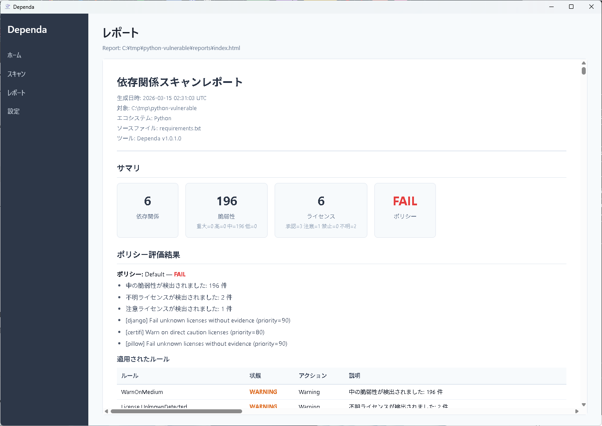
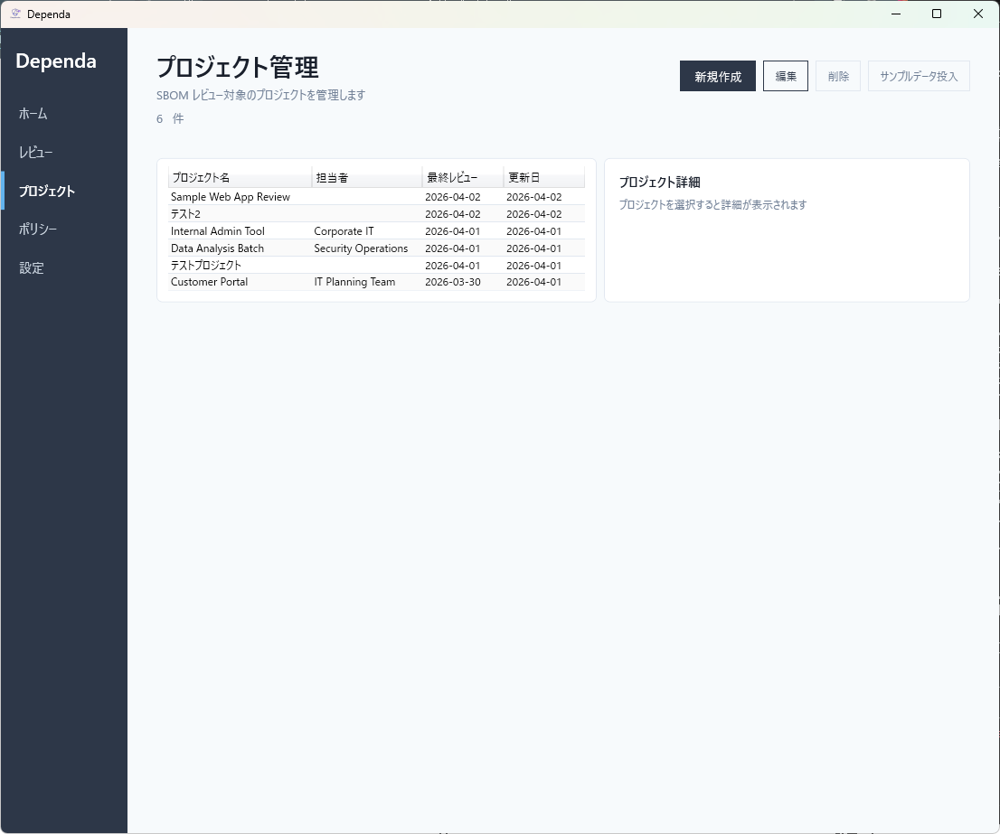

Dependa
OSS を使っていいか判断し、記録して、説明できるツール
SBOM を読み込み、リスクを分類し、レビュー・承認・レポートを支援します。最終判断は人間が行います。
CycloneDX SPDX Python Node.js NuGet ローカル完結なぜこのツールが必要か
ソフトウェアはオープンソースで構成される時代です。SBOM 管理・ライセンス追跡・脆弱性対応はコンプライアンス義務になりつつあります。
既存ツールの多くは「検出・スキャン」に特化しています。しかし実務で難しいのはレビュー・承認・記録・説明です。
今も Excel やメールで OSS 利用審査を管理していませんか？
Dependa は、スキャン結果や SBOM を受け取った「その先」— レビュー・承認・レポートを支援する OSS ガバナンスツールです。

主な機能
リスク分析
ライセンス不明・コピーレフト・脆弱性・AI 利用を自動分類。すべての判定に理由・推奨対応・根拠・確信度が付きます。
レビュー支援
「何を確認すべきか」「どう判断すべきか」を提示。凡例・ガイド・判断テンプレート付きで非技術者でも操作できます。
承認フロー PRO
レビュー中→完了→承認依頼→差し戻し→再開。レビューの進捗と承認状態を一元管理。
レポート出力
監査・上位層向けの HTML / PDF レポート。エグゼクティブサマリー、リスク分析、レビュー結果、免責文を含みます。
SBOM インポート
CycloneDX / SPDX JSON を自動判定して読み込み。Trivy や Syft で生成した SBOM をそのまま使えます。
オンライン補完 PRO
ライセンス不明の項目をパッケージレジストリ（PyPI / npm / NuGet）から補完。レビューを止めません。



Free / Pro
| 機能 | Free | Pro |
|---|---|---|
| SBOM インポート | 1 ファイル | 無制限 |
| リスク分析 | 全項目表示 | 全項目表示 |
| レビュー | 5 件まで | 無制限 |
| 承認フロー | 表示のみ | 全遷移 |
| レポート出力 | 透かし付き | 完全版 |
| SBOM 差分比較 | — | ✓ |
| オンライン補完 | — | ✓ |
| プロジェクト管理 | 1 件 | 無制限 |
他のツールとの違い
Dependa はスキャナの代替ではなく、分析結果をレビュー・承認・報告するためのツールです。
| Trivy / Syft | Snyk / FOSSA | Excel | Dependa | |
|---|---|---|---|---|
| 主な役割 | 検出 | 検出 + 管理 | 記録 | レビュー・承認・記録 |
| レビューワークフロー | — | 一部 | 手動 | ✓ |
| 承認フロー | — | — | 手動 | ✓ |
| 監査向けレポート | — | ダッシュボード | 手動 | HTML / PDF |
| ローカル完結 | ✓ | — | ✓ | ✓ |
Trivy で SBOM を生成し、Dependa でレビュー。組み合わせて使う設計です。
対応フォーマット
| 入力形式 | 対応バージョン |
|---|---|
| CycloneDX JSON | 1.2 / 1.4 / 1.5 / 1.6 |
| SPDX JSON | 2.2 / 2.3 |
対応エコシステム（フォルダスキャン）
| エコシステム | 対応ファイル |
|---|---|
| Python | requirements.txt, pyproject.toml, poetry.lock |
| NuGet (.NET) | .csproj, packages.config |
| Node.js | package.json, package-lock.json |
プライバシー: 分析はすべて PC 上で完結します。オンライン機能はオプションで、有効にした場合のみ公開データベースを参照します。コードやプロジェクト情報がクラウドに送信されることはありません。
Microsoft Store からインストールできます。
▶ Microsoft Store で入手システム要件
- Windows 10 (19041) 以降 / Windows 11
- WebView2 Runtime（PDF 出力に必要）
- ディスク: 約 80 MB / RAM: 512 MB 以上